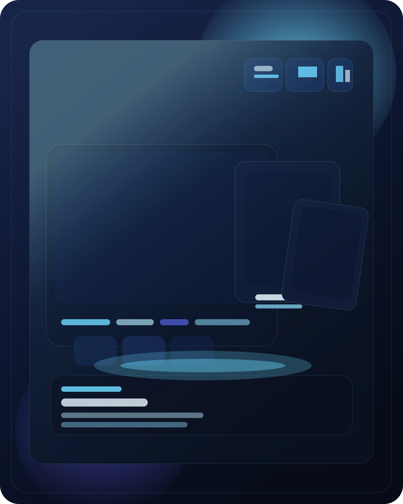
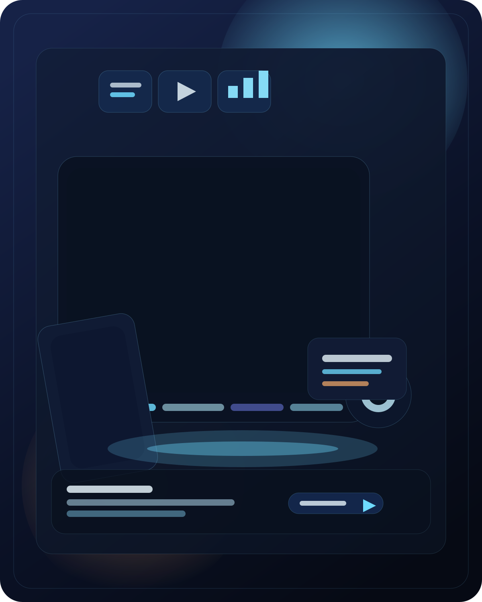
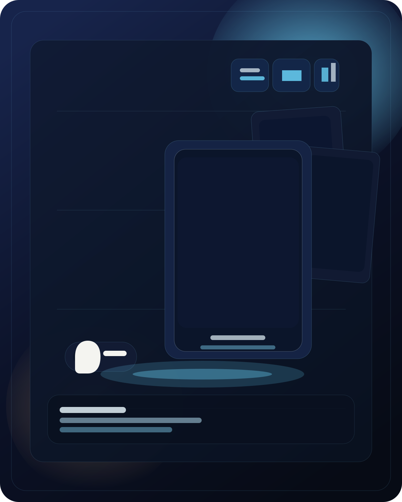
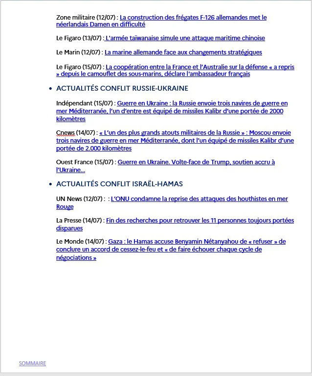
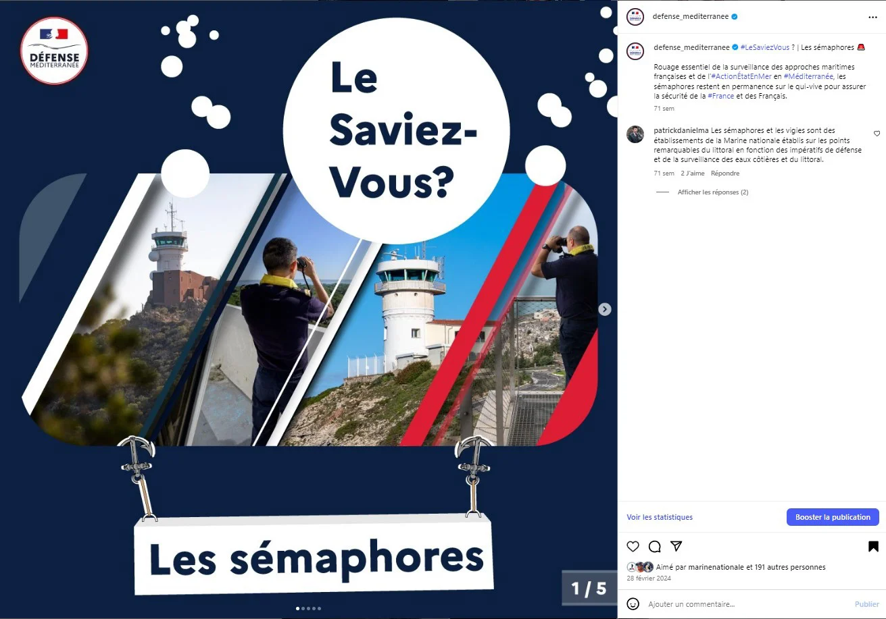

 Adobe
Adobe
Design graphique
Affiches, présentations, supports pour les réseaux sociaux et éléments de communication conçus pour être lisibles et cohérents.
Expertises
Cette page regroupe mes domaines d'intervention, les outils que j'utilise au quotidien et la façon dont je construis un projet, du support imprimé au contenu multimédia.
Domaines
Les champs dans lesquels j'interviens le plus souvent sur un projet, en fonction du support, du public et du message à faire passer.

Adobe
Affiches, présentations, supports pour les réseaux sociaux et éléments de communication conçus pour être lisibles et cohérents.


 Motion
Motion
Vidéos, teasers, reels et habillages pour des contenus courts ou plus développés, avec un travail sur le rythme et la clarté.
 3D
3D
Conception d'objets, de scènes et de rendus 3D pour enrichir un support visuel ou renforcer une présentation multimédia.




ÉditoOrganisation, déclinaison de formats et adaptation du contenu selon le canal de diffusion et le contexte du projet.
Outils
Une méthode simple : cadrer le besoin, produire vite, puis ajuster le rendu jusqu'à obtenir un support clair, cohérent et exploitable.
Préparation des étapes, arbitrage des formats et suivi des versions pour garder un cadre de production propre.
Déclinaisons pour le print, le web, les réseaux sociaux ou les supports internes avec une attention portée aux usages réels.
Structurer l'information, guider le regard et donner un rythme clair au contenu, quel que soit le format final.
Échanges, retours, ajustements et coordination avec plusieurs interlocuteurs pour faire avancer un projet sans le complexifier.
Supports de communication, vidéos, déclinaisons visuelles et éléments prêts à être utilisés par une équipe ou un service.
Une méthode centrée sur la compréhension du besoin, l'efficacité du message et la qualité d'exécution plutôt que sur l'effet décoratif.
Pour voir les projets réalisés, la page portfolio reste l'entrée principale. Pour un échange direct, la page contact est la plus adaptée.